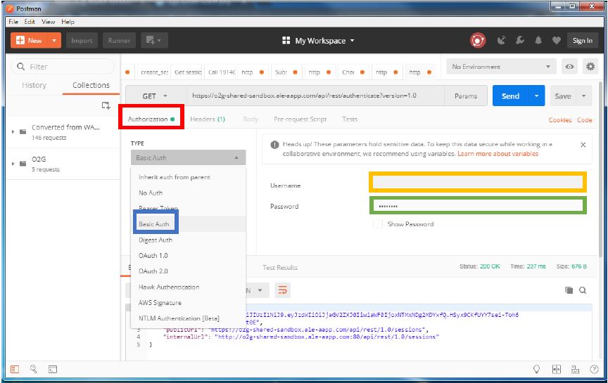
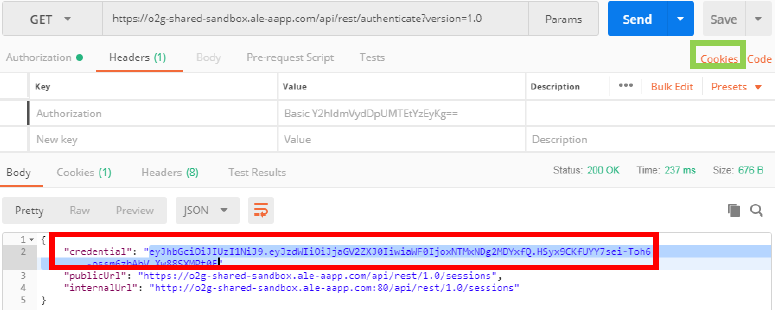
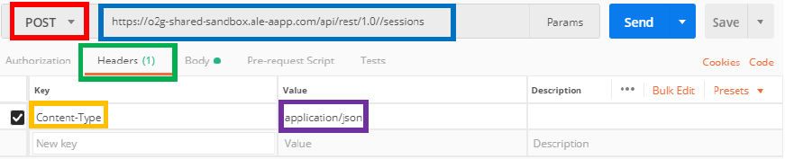
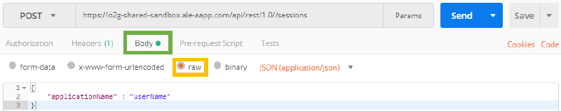

To log in the API, you have to authenticate yourself, and then create a session with your user name.
Authentification
- First, enter this URL : https://o2g-shared-sandbox.ale-aapp.com/api/rest/authenticate?version=1.0 in the field provided for this effect with the GET request.

- Then go to the "Authorization" tab then choose the type "Basic Auth" and enter your login in "Username" and password in "Password" in the fields below.

- If you have the "Status: 200 OK", the query succeded.
- Now, you have your Cookie which will serve you to authenticate you during the next queries. It is automatically saved in the "Cookie" tab.

- You can manually enter the Alcatel Cookie, but it's really not practical. For your information, to do that by hand you have to fill the KEY in the Headers by "Cookie" with the VALUE "AlcUserId=yourCookieValue".
Create a session
- Now that you have the registered authentication cookie, you can open your session by using the POST request with the following URL https://o2g-shared-sandbox.ale-aapp.com/api/rest/1.0//sessions , and by adding in the Header tab the "Content-Type" key and the « application/json » value.

- Then in the "Body" tab, activate the "raw" button then select "JSON", then copy the body as the example below and replace the "userName" with your own application name.

- If you have the "Status: 200 OK", the query succeded.